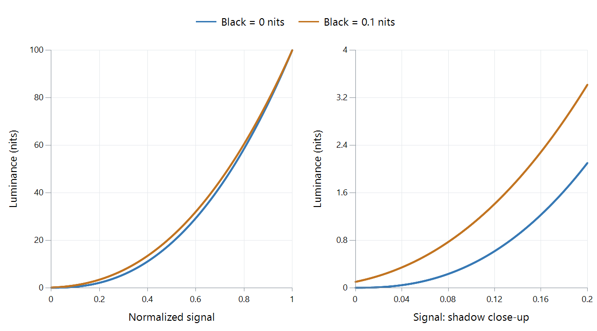

ITU-R BT.1886
A reference SDR display response needs more than a gamma number: its black floor and white level determine the light available at the endpoints. BT.1886 defines an EOTF for HDTV reference displays using those measured endpoint luminances and an exponent of 2.4.

Calculated reference responses. The shadow panel shows the effect of the black floor; these are selected display parameters, not measurements of a television.
Calculate the response from its endpoints
Let Lw be white luminance, Lb black luminance, and V the normalized signal. With gamma = 2.4:
a = (Lw^(1/gamma) − Lb^(1/gamma))^gamma
b = Lb^(1/gamma) / (Lw^(1/gamma) − Lb^(1/gamma))
L = a × max(V + b, 0)^gamma
The coefficients make V = 0 reach the specified black and V = 1 reach the specified white. If black is zero, b becomes zero and a becomes Lw, leaving the familiar pure power response L = Lw × V^2.4.
For 100-nit white, compare zero black with 0.1-nit black:
| Signal V | Light at zero black | Light at 0.1-nit black |
|---|---|---|
| 0 | 0 nits | 0.1 nit |
| 0.1 | 0.398 nit | 1.064 nits |
| 0.5 | 18.946 nits | 21.605 nits |
| 1 | 100 nits | 100 nits |
The second response reaches the higher black floor and redistributes the lower tones to meet the same white. It is not obtained simply by adding 0.1 nit to every output of the zero-black curve.
Use the shadow panel to interpret a dark scene
A dark jacket can contain several distinct low-level folds. Their encoded values have a display-light relationship; the black floor and response determine how much separation is produced. Room reflections and the viewer's adaptation can further affect whether that separation is visible.
BT.1886 gives a reference response for this part of the system. It is distinct from the BT.709 source transfer characteristic, so a conventional BT.709 file is not retagged BT.1886 to describe reference display behavior.
In a playback comparison, use the same SDR source and inspect the app's output and screen mode. A difference in shadow appearance can arise after decoding. Keeping the response's endpoints and middle-tone behavior visible makes the investigation more precise than comparing a single “gamma” label.